테스트용 스토리
subtitle
Episode 1
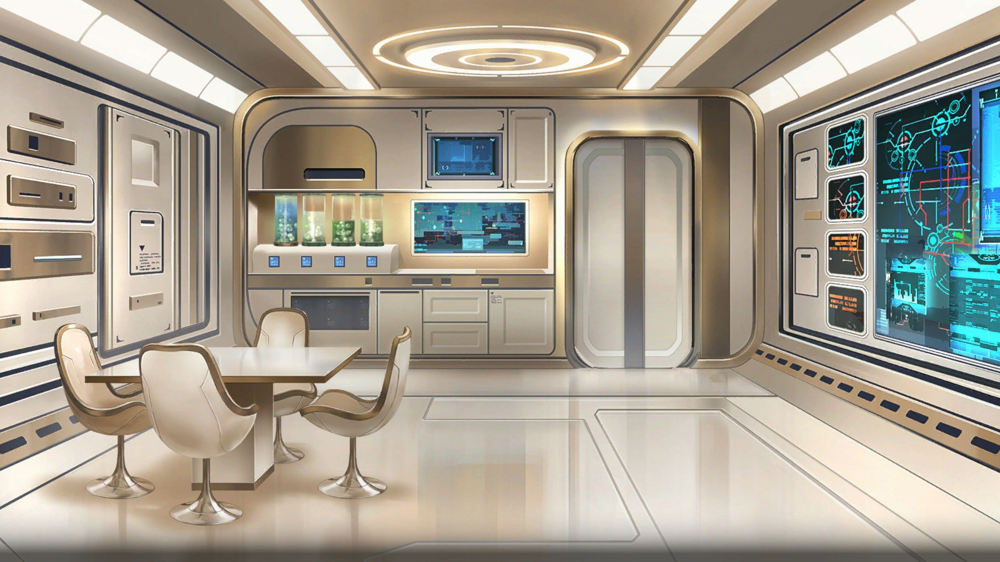
2225년 9월 2일 11:25 소라나의 방
내가 마법소녀가 된 날로부터 하룻밤이 지났다. 일상으로 돌아오기에는 불과 십수 시간으로 충분하였나.
익숙함이란 무섭다. 그런 일이 있었는데도 태연하게 생활할 수 있으니.
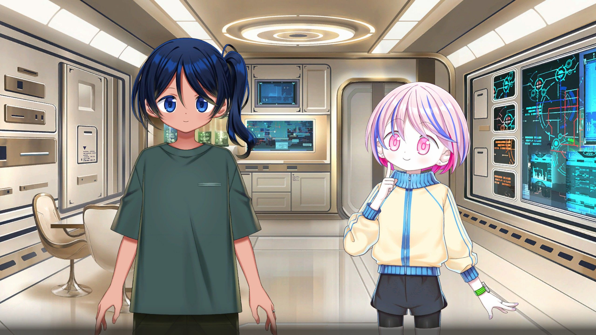
릴리 캔디: 근데 근데, 코랄쨩 반납 기한이 언제까지야?
나기보시 소라나: 렌트가 월마다 갱신하는 거라 이번 달 말까지예요.
릴리 캔디: 그럼 아직 시간 있는 거네!
릴리 캔디: 그럼 말이야… 우리 나가서 놀지 않을래?
릴리 캔디: 어제는 이런저런 일이 있었으니까 오늘은 마음껏 즐기자!
나기보시 소라나: (그걸 그냥 '이런저런 일'로 넘긴다고!?)
릴리 캔디: 게다가 소라나쨩은 이제 팀의 일원인걸!
나기보시 소라나: 히, 히에에에…… 그러고 보니 그랬었죠……
릴리 캔디: 소라나쨩이랑 셀카도 이래저래 찍고 싶어~
릴리 캔디: 있잖아 있잖아, 소라나쨩.
릴리 캔디: 구수도 에서 제일 사진 찍기 좋은 곳이 어디야?
나기보시 소라나: 아… 좀 멀긴 한데.
나기보시 소라나: 폐허 마니아에게 꽤 인기 있는 장소가 있어요.
릴리 캔디: 오~ 어딘데? 알고 싶어, 알고 싶어~!
나기보시 소라나: 그, 그럼 코랄 타고 나들이 가 볼까요?
릴리 캔디: 앗싸! 하이킹이네! 도시락 가져가자!
나기보시 소라나: 아… 배달로 주문할까요?
릴리 캔디: 모처럼이니까 같이 만들어서 가자!
나기보시 소라나: 릴리쨩이랑 같이 요리…!
나기보시 소라나: 역시… 꿈인 거야아!?
릴리 캔디: 근데 근데, 여기 특산품이 뭐야?
나기보시 소라나: 글쎄요… 파래 양식이 활발하고.
나기보시 소라나: 해상 양식장에서는 공심채를 키우고 있어요.
나기보시 소라나: 함초 같은 건 만 안쪽의 습지대에서 재배되고
나기보시 소라나: 더 북쪽의 건조 지대에서는 백년초 같은 선인장이 있죠.
나기보시 소라나: 그리고 물론 해산물도 있어요. 비늘돔이나 홍합 같은…
나기보시 소라나: 꽃게도 많이 잡혀요.
릴리 캔디: 신기해~! 맛있겠다~! 전부 주문하자!
나기보시 소라나: 그럼 주문할게요.
나기보시 소라나: 드론이 자동으로 수확해서 배달해 줄 거예요.
릴리 캔디: 우와~! 진짜 산지 직송이다~!
30분 후
나기보시 소라나: 앗! 도착한 것 같아요.
릴리 캔디: 와와와와~! 맛있겠다~!
릴리 캔디: 이게 백년초야? 부채처럼 납작해!
릴리 캔디: 오~, 선인장인데 가시가 없구나!
나기보시 소라나: 가시가 없는 품종이거든요.
나기보시 소라나: 이 어린순은 노팔레스라고 하는데,
나기보시 소라나: 생으로 먹어도 돼요.
릴리 캔디: 암냠냠… 우와! 진짜 엄청 싱싱하네!
나기보시 소라나: 조금 점도가 있어서 의외로 밥이랑 잘 어울려요.
릴리 캔디: 함초도 생으로 먹을 수 있어?
나기보시 소라나: 네, 간이 되어 있어서 간식 대신으로 먹어요.
릴리 캔디: 으음! 이것도 맛있다!
나기보시 소라나: 조금 짜니까 살짝 데치면 좋아요.
릴리 캔디: 소라나쨩은 뭐든 알고 있구나!
나기보시 소라나: 치, 칭찬해도 뭐 안 나온다구요~!
릴리 캔디: 후후후~ 더 칭찬해 줄 거야~!
나기보시 소라나: 히, 히에에에에
나기보시 소라나: 크, 크흠… 그럼… 요리해 볼까요…!
릴리 캔디: 와~! 기다렸어~!
릴리 캔디: 뭐 만들까? 뭐 만들까?
나기보시 소라나: 으음, 홍합이랑 파래로 후카가와메시풍 구운 주먹밥을 만들고
나기보시 소라나: 비늘돔이랑 백년초는 튀김으로
나기보시 소라나: 공심채랑 함초랑 꽃게로 알리오 올리오 페페론치노
나기보시 소라나: …이렇게 할 생각인데 어떠세요?
릴리 캔디: 멋져 멋져! 멋지다~!
릴리 캔디: 소라릴리 요리부 스타트!
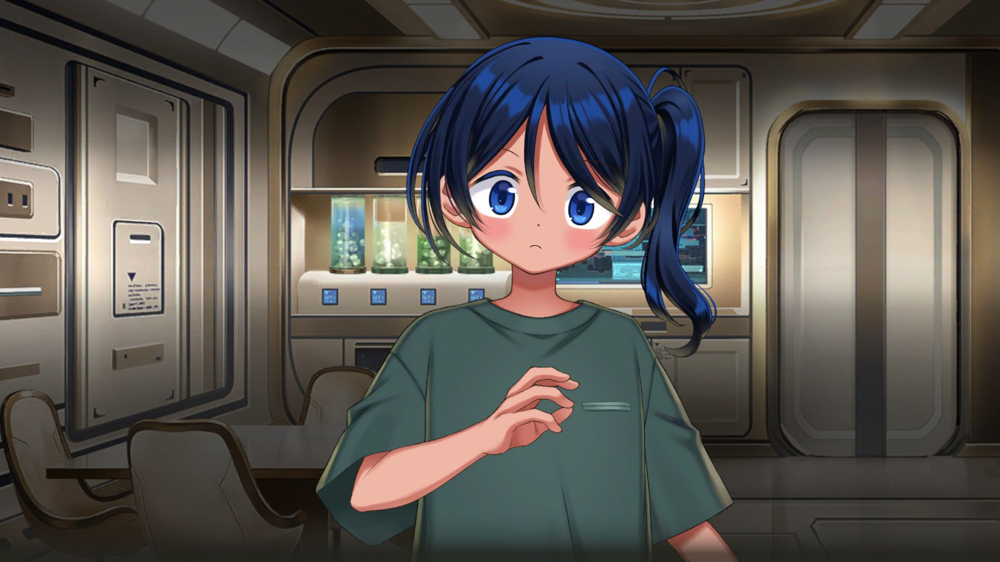
나기보시 소라나: (소라릴리라니… 하와와와와~!)
릴리 캔디: 완~성! 우와~ 맛있겠다~!
릴리 캔디: 소라나쨩은 평소에도 이렇게 만들어 먹어?
나기보시 소라나: 아뇨 아뇨, 평소엔 대충 해 먹어요.
나기보시 소라나: 릴리쨩이 있었으니까 할 수 있는 거예요.
릴리 캔디: 훗훗~! 우리의 공동 작업이네!
나기보시 소라나: (또 부끄러운 말을…)
릴리 캔디: 으음, 왠지 배가 고파졌어~
릴리 캔디: 좀 집어 먹어도 될까?
나기보시 소라나: 물론이죠, 얼마든지 드세요.
릴리 캔디: 암냠냠… 맛있어~!
릴리 캔디: 튀김이 겉은 바삭바삭, 속은 촉촉해!
릴리 캔디: 파스타는 게살 소스 엄청 진하고!
릴리 캔디: 공심채랑 함초도 아삭아삭해!
릴리 캔디: 주먹밥도 감칠맛이 엄청나!
나기보시 소라나: 그렇게 먹으면 하나도 안 남을 거예요~!
릴리 캔디: 어이쿠… 큰일 날 뻔했네!
릴리 캔디: 좋아! 도시락도 완성했으니 하이킹 가자~!
나기보시 소라나: 그, 그래요…!
Episode 2
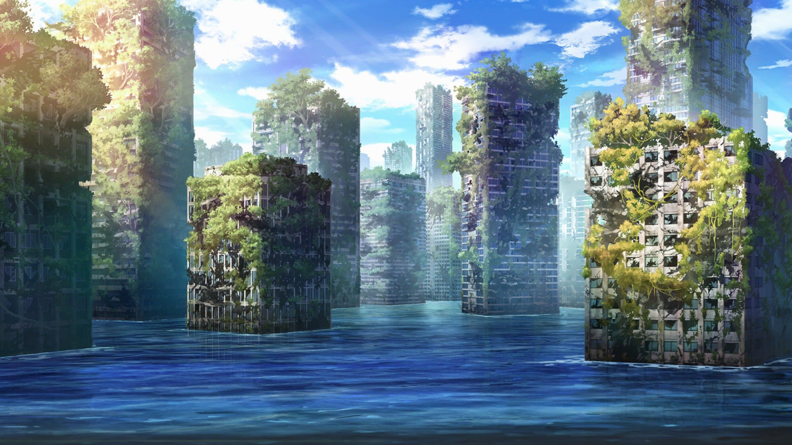
13:08 구수도 고가교 폐허
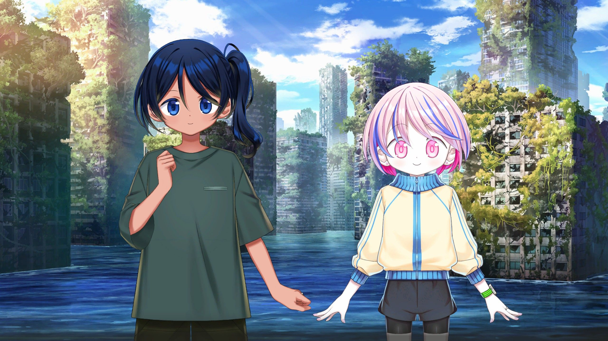
나기보시 소라나: 도착했어요. 여기가 제가 말한 곳이에요.
릴리 캔디: 와~와~와~와~! 굉장해 굉장해~!
릴리 캔디: 바다 위에 선로가 있네~!
나기보시 소라나: 예전에 해안가였고, 고가교를 따라 모노레일이 운행되었는데
나기보시 소라나: 해수면 상승으로 바다 위를 달리는 듯한 모양이 되었어요.
릴리 캔디: 근데 근데, 저 위에도 들어갈 수 있어?
나기보시 소라나: 다리 위 말씀하시는 건가요?
릴리 캔디: 응, 선로를 걸을 수 있다면 엄청 좋은 사진을 찍을 수 있을 것 같아!
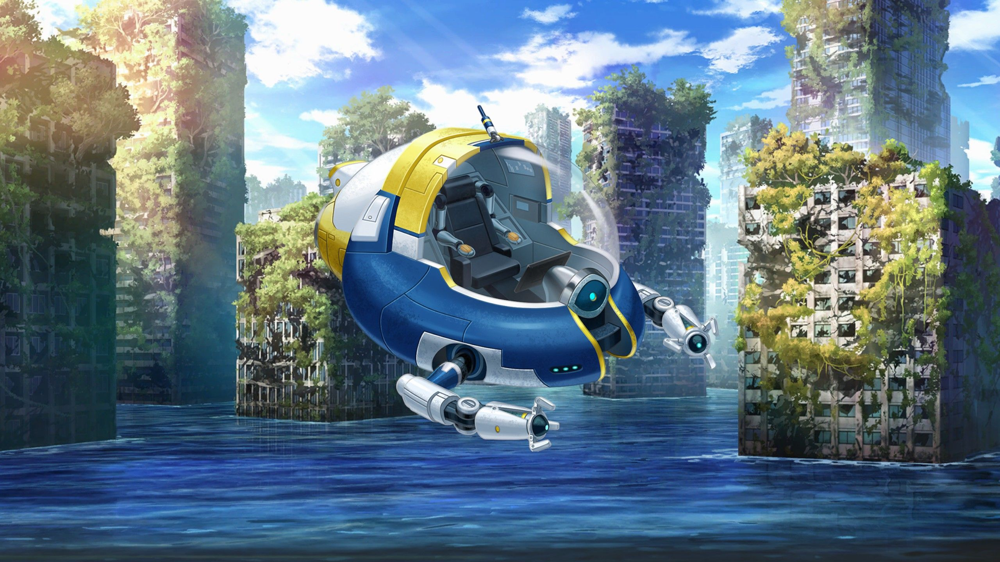
내비 AI: 본 기체로는 육상 주행을 할 수 없습니다.
내비 AI: 만일 설계 사양을 어긋나는 방식으로 이용하신 경우에는 위약금이…
나기보시 소라나: 아~ 진짜, 코랄은 가만히 있어!
나기보시 소라나: …낮은 곳에서 올라가면 걸어갈 수 있지 않을까?
내비 AI: 이건 의무적인 경고입니다만…
내비 AI: WBGT 는 35를 크게 넘었습니다.
내비 AI: 인간이 생존하기에는 한계에 가까우며 몇 시간 안에 사망할 우려가…
나기보시 소라나: 예 예, 알았어 알았어.
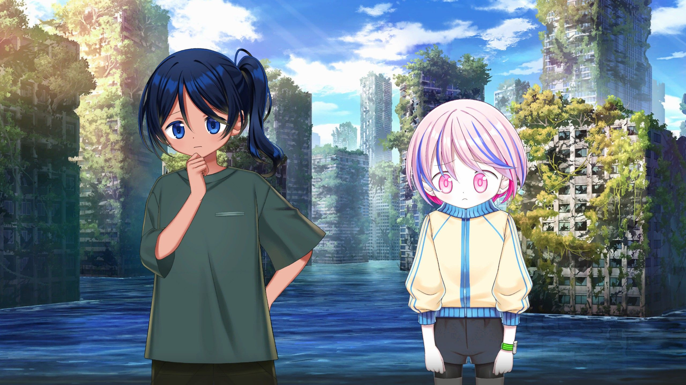
릴리 캔디: 뭐야~! 밖에 못 나가는 거야~? 모처럼 도시락도 만들었는데~
나기보시 소라나: 아… 어쩌면… 제 마법을 쓰면 갈 수 있을 것 같은데…
릴리 캔디: 오~! 진짜~!? 앗싸! 앗싸!
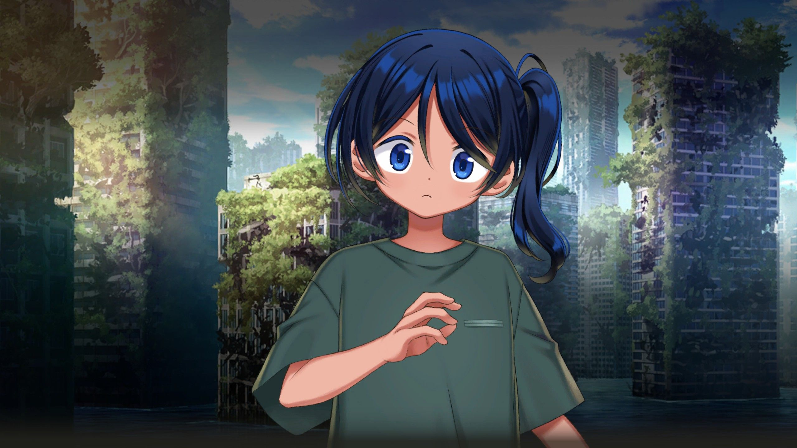
나기보시 소라나: (우, 우와아! 릴리쨩의 동그란 눈이 반짝반짝해~)
나기보시 소라나: (이건 절대 실패하면 안 되겠어…)
내비 AI: 마법이라니, 갑자기 무슨 말씀을 하시는 겁니까?
내비 AI: 솔직히 아프신지 조금 걱정됩니다만…
나기보시 소라나: 아, 예, 우리 얘기니까 넌 끼어들지 마…
나기보시 소라나: 좋아, 해치 열게요…
릴리 캔디: 앗싸~! 오오오오오픈!
나기보시 소라나: 으아… 예상은 했지만 엄청 덥네…
릴리 캔디: 바싹 타는 팝콘 같아! 펑펑펑퍼~~~~~~엉!
나기보시 소라나: 귀, 귀여워어…!
릴리 캔디: 에헤헤! 고마워!
나기보시 소라나: 으헥!? 소리 내서 말했다!
릴리 캔디: 후후후~ 소라나쨩도 귀여워!
나기보시 소라나: 아우가가라아아아! 아교에에에에!
릴리 캔디: 엄청 귀여운 소라나쨩에게 부탁이 있어!
릴리 캔디: 시원하게 팍팍 식혀 줘!
나기보시 소라나: 네, 녜에… 혈심히 하게슴니다…
나기보시 소라나: 머, 먼저허… 변신을 하게슴니다…
릴리 캔디: 같이 변신하자~! 이리 와!
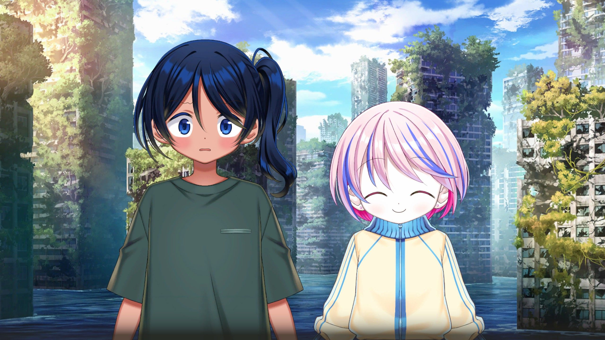
나기보시 소라나: 아와와와와~! 릴리쨩의 손이 내 손에에!
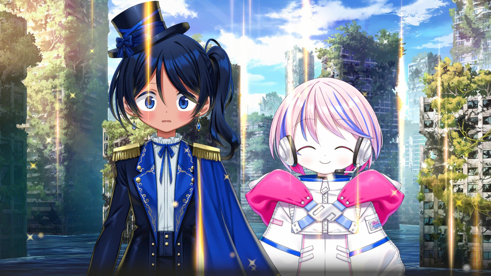
릴리 캔디: 그래서 그래서!? 여기서 어떻게 해?
나기보시 소라나: 어, 그게… 아! 대기 중 수증기 밀도를 바꾸면…
숨 막힐 듯한 더위 속에서 나는 눈을 감는다.
주위의 후덥지근한 감각에 집중하며 수증기의 자취를 의식하려 한다.
나기보시 소라나: 에잇! 퍼져라!
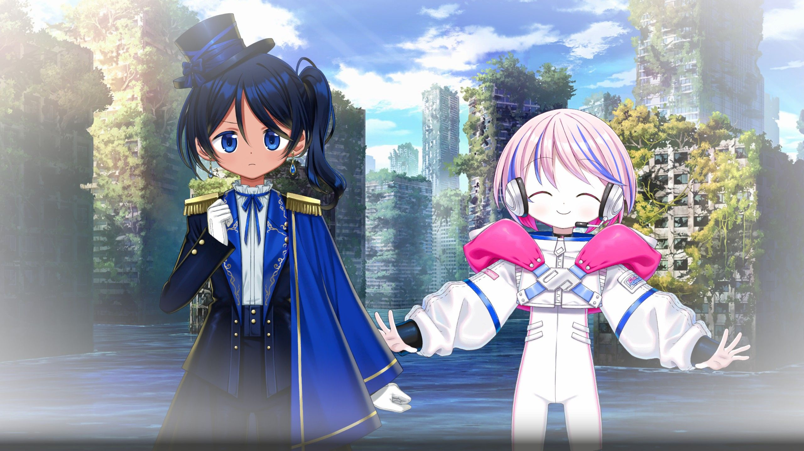
릴리 캔디: 우와~ 엄청 시원해~! 좋다~!
나기보시 소라나: 하아… 하아… 잘 된 건가…?
릴리 캔디: 대성공이야! 소라나쨩, 어떻게 한 거야?
나기보시 소라나: 아… 단열 팽창이에요…
나기보시 소라나: 수증기가 확산되면서 공기가 팽창하는데…
나기보시 소라나: 그때 생기는 운동 에너지만큼 공기는 열을 빼앗겨요.
릴리 캔디: 에어록을 열면 잠깐 안개가 나오는 것과 같은 원리구나!
나기보시 소라나: 호에에~ 역시 우주에서 자란 분… 발상이 달라…
릴리 캔디: 뭔가 산들바람도 불어서 기분 좋네!
나기보시 소라나: 아… 그러네
나기보시 소라나: 미니 저기압이 생겨서 바람이 불어 들어오는 거구나…
릴리 캔디: 머리 위에 조그만 구름이 떠 있어! 귀여워~!
나기보시 소라나: 상승 기류가 생겨서 식은 수증기가 구름이 된 걸까?
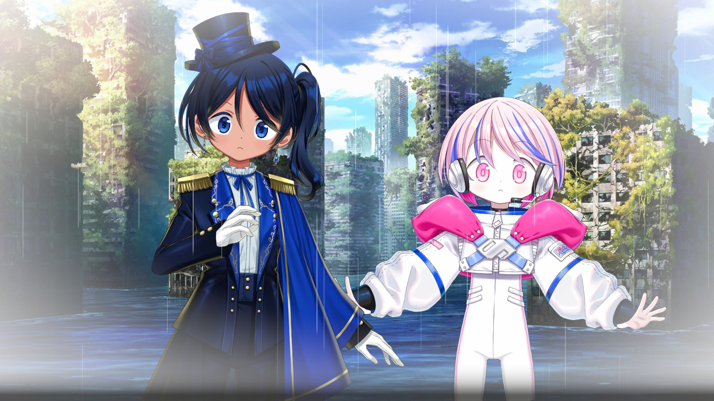
릴리 캔디: 우와~! 비가 내리기 시작했어~!
나기보시 소라나: 와와왓! 기압을 너무 낮췄어… 조절을…
릴리 캔디: 비야 비야 내려라~ 후후후~!
릴리 캔디: 이제 밖에서 모험할 수 있겠다!
릴리 캔디: 소라나쨩 정말 대단해~!
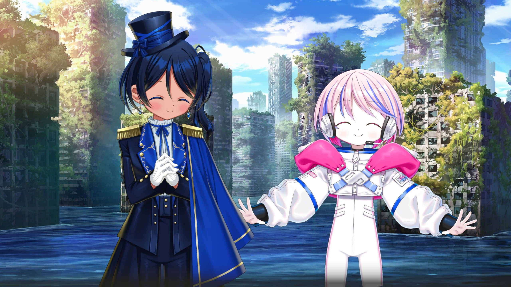
나기보시 소라나: 테헤, 테헤헤헤… 황송한 말씀…
릴리 캔디: 좋아, 출발이다~! 렛츠 고~!
나기보시 소라나: 야, 야호~!
릴리 캔디: 루루루~웅♪ 루루루~♪ 소라나쨩이랑 나들이~♪
릴리 캔디: 훗훗~, 있잖아, 소라나쨩. 이러고 있으면…
릴리 캔디: 왠지 세상에 우리밖에 없는 것 같아!
나기보시 소라나: 히에? 그, 그러네여!
나기보시 소라나: (정말… 어떻게 내 심장을 터뜨릴 것 같은 멘트가 저리 줄줄이 나오는 거야!?)
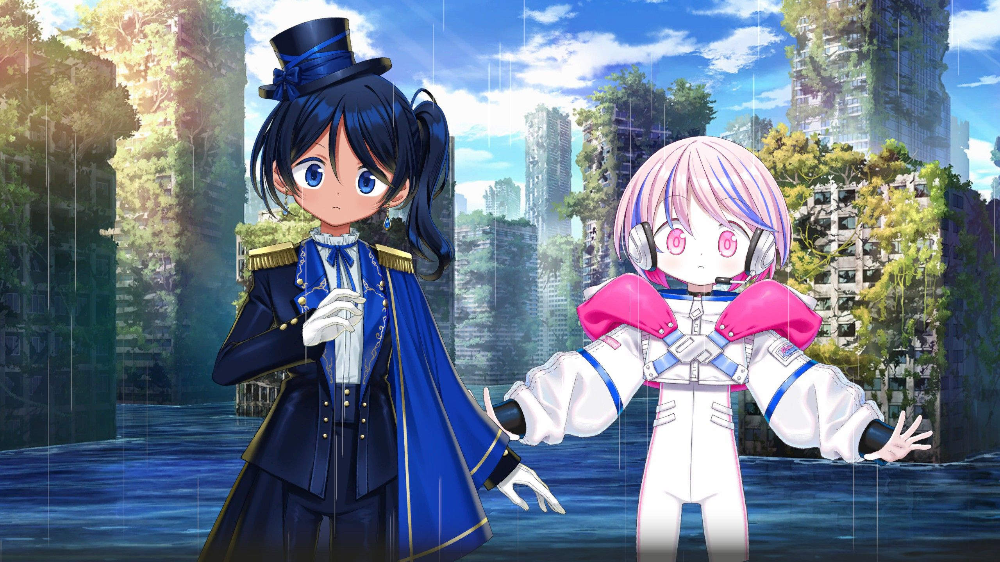
릴리 캔디: 와~! 또 비가 내리기 시작했어~ 천둥도 치고 있어!
나기보시 소라나: 헉! 흥분해서 조절을 잘못했어!
10분 후
릴리 캔디: 랏랏라라란란♪ 라라라라~♪
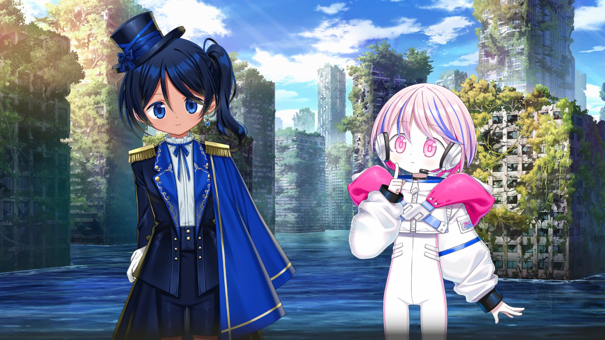
릴리 캔디: 어라라? 다리가 무너져 있어?
나기보시 소라나: 여기부터는 막다른 길이네요.
끊어진 레일 앞에서 걸음을 멈춘다. 고가교는 무너져 있었다. 앞에 보이는 것은 그저 푸른 바다뿐.
바다 위에는 콘크리트 기둥들이 늘어서 있다. 무거운 짐에서 해방된 교각들이 바닷바람에 몸을 맡기며.
바람과 파도의 외침 속에서, 무너진 레일 앞에는 방치된 모노레일 차량이 있었다. 마치 갑자기 끝나 버린 운행에 당황하고 있는 듯하다.
한때 수많은 사람들을 태웠을 차량은 두 번 다시 오지 않을 출발을 꿈꾸며, 꼼짝도 하지 않은 채 서 있었다.
릴리 캔디: 우와~! 엄청 좋은 풍경이야!
나기보시 소라나: 네, 엄청 감성적이네요…
릴리 캔디: 좋아! 셀카 찍자~! 좋은 게 찍힐 것 같아!
나기보시 소라나: 아, 저, 그럼 드론 띄울게요.
릴리 캔디: 있잖아, 소라나쨩, 저기에 걸터앉아 보지 않을래?
나기보시 소라나: 네? 저기라면 무너진 가장자리 말인가요!?
나기보시 소라나: 위험하지 않을까요…?
릴리 캔디: 괜찮아! 우리는 마법소녀인걸!
릴리 캔디: 소라나쨩이 떨어지면 내가 구해 줄 게!
나기보시 소라나: 노헤엣!? 그그그그그런가요!?
나기보시 소라나: 그, 그럼 도전해 볼까요…
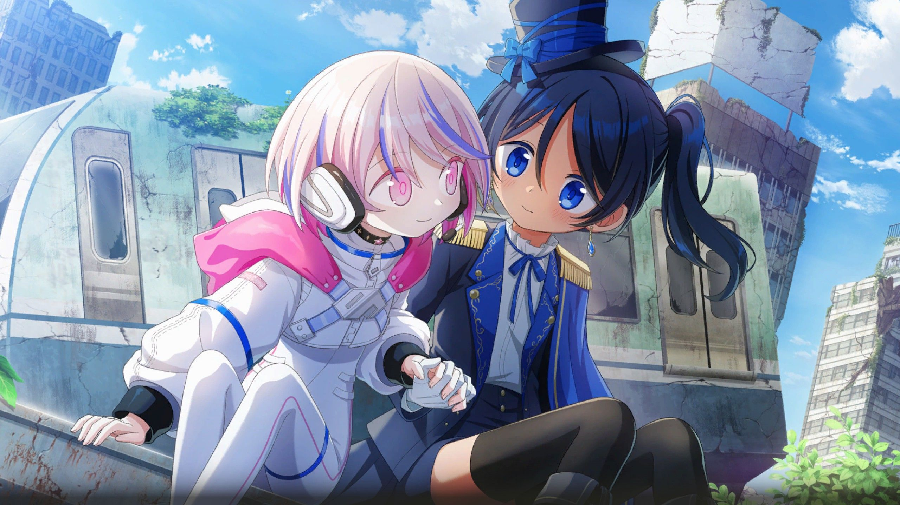
나기보시 소라나: 우와와아… 꽤 높다…
릴리 캔디: 소라나쨩, 자, 손 잡아.
나기보시 소라나: 아, 네… 우와아… 따뜻해…
나기보시 소라나: 손이 부드럽다아…
나기보시 소라나: 와와아… 얼굴이 너무 가까워…! 딱 붙어있잖아!
나기보시 소라나: 너무 귀여워… 큰일이야 큰일 큰일…!
릴리 캔디: 후후후, 소라나쨩 무서움이 사라진 것 같아!
나기보시 소라나: 아, 그러네요…
나기보시 소라나: …그보다 이럴 게 아니라…!
릴리 캔디: 좋은 미소야! 자, 드론 봐, 치즈~!
나기보시 소라나: 치, 치이즈으…!
...
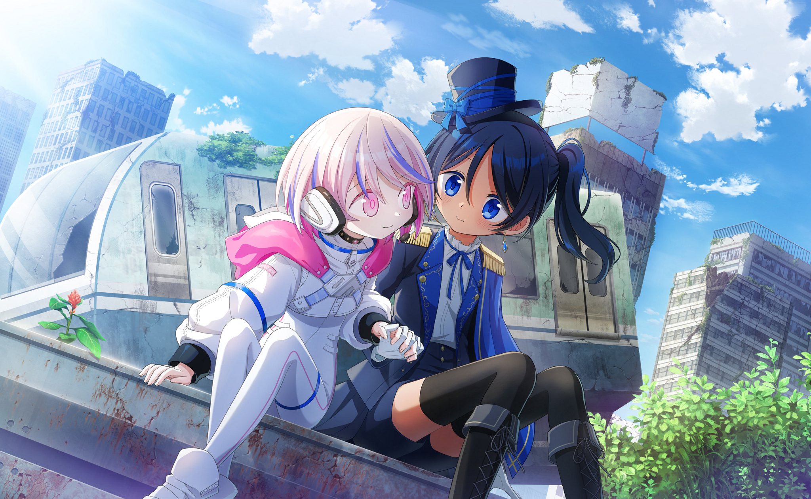
가라앉은 거리의 한낮
溺れた街の昼下がり